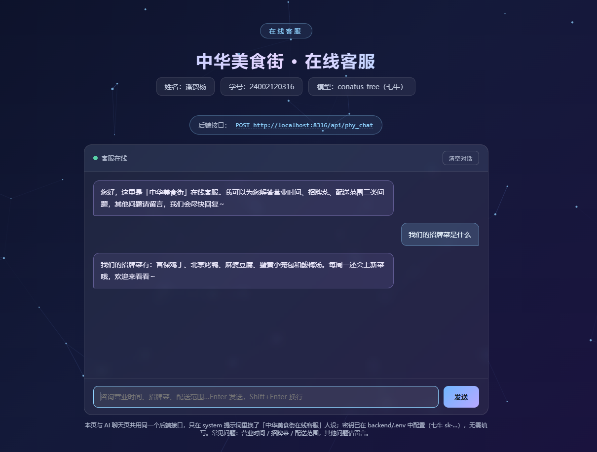
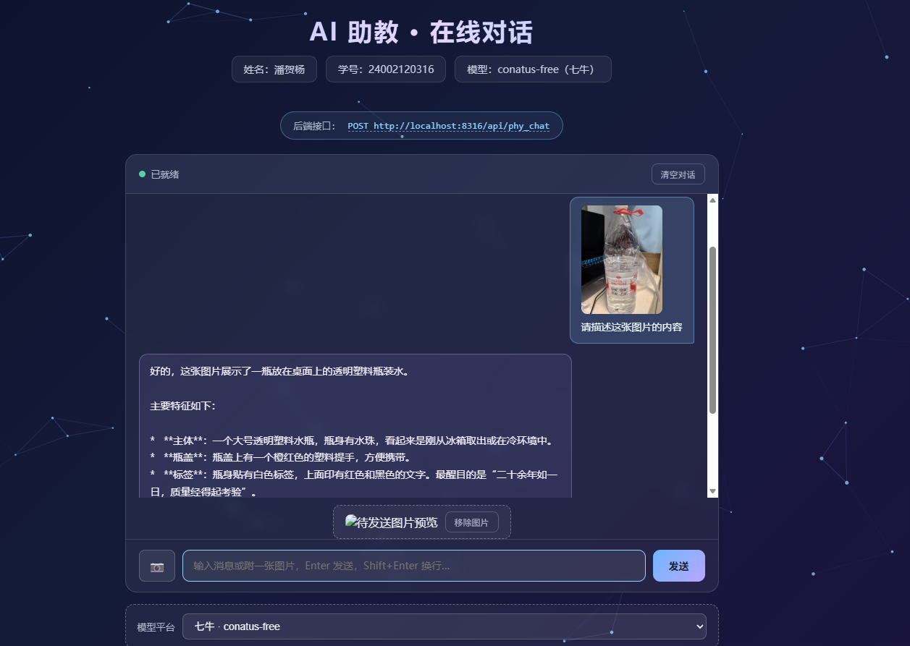
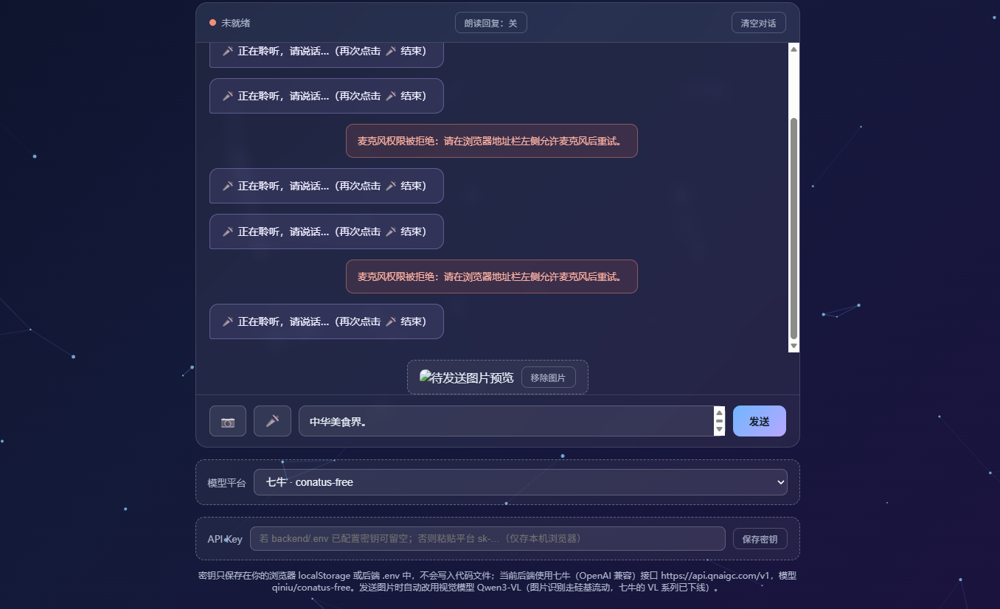

1
功能一：AI 多轮对话
发送问题 → AI 在线应答（多轮对话）
- 打开「中华美食街 · 在线客服」页，后端接口为
POST http://localhost:8316/api/phy_chat，密钥已在 backend/.env 配置，页面无需填写。 - 在输入框输入问题「我们的招牌菜是什么」，按 Enter 或点「发送」。
- AI 读取 system 提示词中的店铺人设，回答招牌菜：宫保鸡丁、北京烤鸭、麻婆豆腐、蟹黄小笼包和酸梅汤。
- 继续追问营业时间、配送范围等问题，AI 结合上下文连续应答——多轮对话生效。

实测：发送「我们的招牌菜是什么」，客服 AI 以店铺人设准确答出五道招牌菜并引导到店，多轮上下文连续应答正常。
💡 工作原理：前端把全部历史消息组成
messages 数组 POST 给后端
/api/phy_chat，后端代理转发到 OpenAI 兼容接口并 SSE 流式回传；接口本身无状态，
「记得上文」全靠每次请求都带上历史消息。
2
功能二：图像识别
上传图片 → 返回该图片的中文描述
- 点输入框左侧 📷 按钮，选择本地图片（模型要求宽高大于 28px）。
- 图片自动压缩（最长边 1024px）后出现缩略预览条，可点「移除图片」撤销。
- 发送后用户气泡内显示缩略图，后端检测到图片自动改用视觉模型。
- 等待返回，结果区显示该图片的中文描述。

实测：上传桌面矿泉水瓶照片，模型回复「这张图片展示了一瓶放在桌面上的透明塑料瓶装水」，并分点描述瓶身、瓶盖与标签特征。
💡 工作原理：前端把图片读成 base64 data URL，组装成 OpenAI 兼容
content 数组（text + image_url）随 JSON 提交；后端识别到图片消息自动切换
Qwen3-VL 视觉模型（当前平台没有视觉模型时回落硅基流动）。
3
功能三：语音输入与播报
点 🎤 说话 → 文字进输入框；开启朗读 → AI 回复自动播报
- 点输入框左侧 🎤 按钮，允许浏览器使用麦克风，按钮变红色呼吸高亮。
- 说完再点一次 🎤 结束，识别出的中文文字自动填进输入框。
- 点聊天窗口右上角「朗读回复：关」切换为「开」。
- 之后每条 AI 回复结束时自动用中文朗读，再次点击开关即停止播报。

实测：点击 🎤 后出现「正在聆听，请说话…（再次点击 ⚡ 结束）」提示气泡，说话内容自动填入输入框，右上角可切换「朗读回复」。
💡 工作原理：语音识别用浏览器 Web Speech API（SpeechRecognition，zh-CN）
本地转文字；播报用 speechSynthesis 语音合成朗读——均为浏览器内置能力，不消耗任何 API 密钥，
需在 Edge / Chrome 的 localhost 或 https 环境下使用。